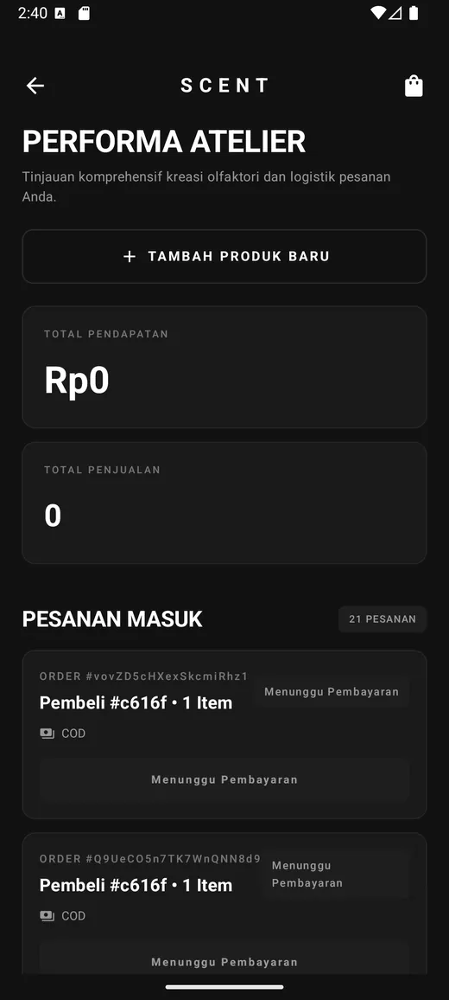
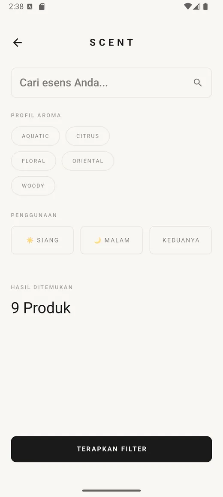
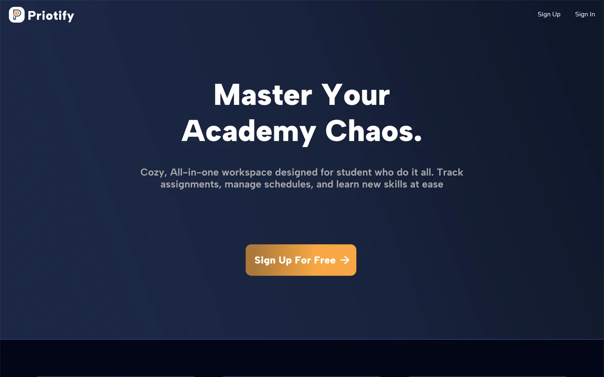
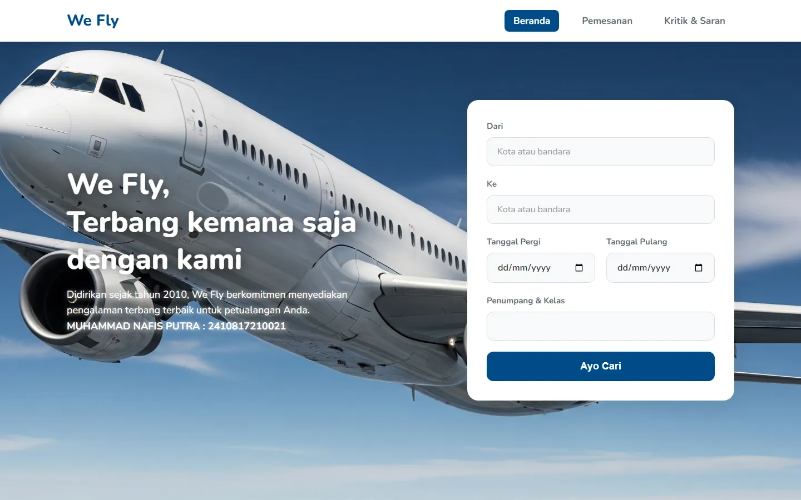

Halo, saya Muhammad
Nafis Putra.
Saya membangun aplikasi Android, dashboard data, dan situs web, serta mengurus acara yang tepat waktu.
Mahasiswa semester 5 Teknologi Informasi di Universitas Lambung Mangkurat dengan IPK 3,84. Terbiasa bekerja dari kode Kotlin dan Laravel sampai pipeline data, dan di luar kelas memastikan acara berjalan sesuai rundown.

- IPK dari 4,00
- 3,84
- Semester berjalan
- 5
- Proyek di halaman ini
- 8
- Sertifikat
- 5
Karya
Delapan proyek dari aplikasi, data, web, sampai desain UI. Pilih kategori untuk menyaring.
-



ScentApp
Marketplace parfum. Pembeli mencari wangi berdasarkan notes aroma, belanja lewat keranjang, mengunggah bukti transfer, dan melacak resi. Stok berubah di layar saat itu juga lewat Firestore.
-

Kondisi Bangunan Banjarmasin
Survei lapangan 1.016 bangunan di lima kecamatan, diolah menjadi dashboard, peta 3D interaktif, dan poster A3. Temuan utamanya: 148 dari 193 bangunan rusak yang masih dihuni berdinding kayu.
-

FitZone Data Warehouse
Sistem BI untuk jaringan gym fiktif PT FitZone Nusantara: dashboard enam halaman yang menjawab pertanyaan bisnis, dengan data warehouse yang saya bangun dari nol di baliknya.
Cara saya membangun data warehouse-nya
- Sumber. CSV latihan member (harian) dan WHO Global Health Observatory API (bulanan).
- Data lake. File asli di raw zone dengan checksum; hasil bersih di curated zone sebagai parquet.
- Quality gate. 16 aturan validasi; batch berhenti bila lebih dari 5% baris ditolak.
- Star schema. 7 dimensi dan 3 fakta di PostgreSQL, dimuat dalam satu transaksi dengan rekonsiliasi.
- Data mart. View dan materialized view sebagai sumber dashboard.
- Otomasi. Tiga DAG Airflow, log audit, backup, dan model Random Forest.
-

CommitIn
Prototipe platform rekrutmen kepanitiaan kampus: mahasiswa mencari lowongan BEM, HIMA, dan panitia acara, lalu memantau lamarannya tahap demi tahap.
-

BarterSkill
Mahasiswa bertukar keahlian tanpa uang. Postingan berupa Offer atau Request, dan pemilik postingan menerima atau menolak tawaran barter.
-


Priotify
Desain UI dan prototipe interaktif aplikasi pengatur prioritas belajar di Figma.
-

-

Tentang
Kode yang rapi, acara yang tepat waktu. Dua-duanya soal memastikan semua berjalan sesuai rencana.
Saat ini saya menjalani semester 5 di Teknologi Informasi ULM. Proyek kuliah membawa saya dari Java desktop ke Android dengan Kotlin, lalu ke web dengan Laravel, dan sekarang banyak ke data. Tahun ini saya juga ikut pelatihan jaringan dan keamanan siber lewat Digital Talent Scholarship.
Untuk aplikasi, saya menulis Kotlin dengan Jetpack Compose, Room, Retrofit, dan Firebase; Java dengan JavaFX dan MySQL; serta PHP dengan Laravel, Tailwind CSS, dan Bootstrap. Untuk data, saya memakai Python (pandas, NumPy, Plotly, seaborn, scikit-learn), Streamlit, Apache Airflow, PostgreSQL, Docker, dan Tableau.
Sehari-hari saya bekerja dengan Git dan GitHub, Android Studio, IntelliJ IDEA, VS Code, dan Figma. Di luar kode, saya bekerja lepas sebagai event dan wedding organizer dan menulis skrip MC untuk acara himpunan, jadi terbiasa dengan tenggat dan rencana yang berubah di menit terakhir.
Rundown
Perjalanan saya, ditulis seperti susunan acara.
Sertifikat
Klik tiket untuk membuka sertifikat aslinya.
- Digital Talent Scholarship · KomdigiIntermediate Cybersecurity + AI Essentials · Google 108jam · Jun 2026
- Digital Talent Scholarship · KomdigiIntermediate Associate Network Administrator 12jam · Jun 2026
- Digital Talent Scholarship · KomdigiFundamental of Associate Network Administrator 12jam · Jun 2026
- Prodi Teknologi Informasi ULMWorkshop Cybersecurity NOV2025
- HMTI Fakultas Teknik ULMPenghargaan Pengurus, Divisi Minat dan Bakat MAR2026